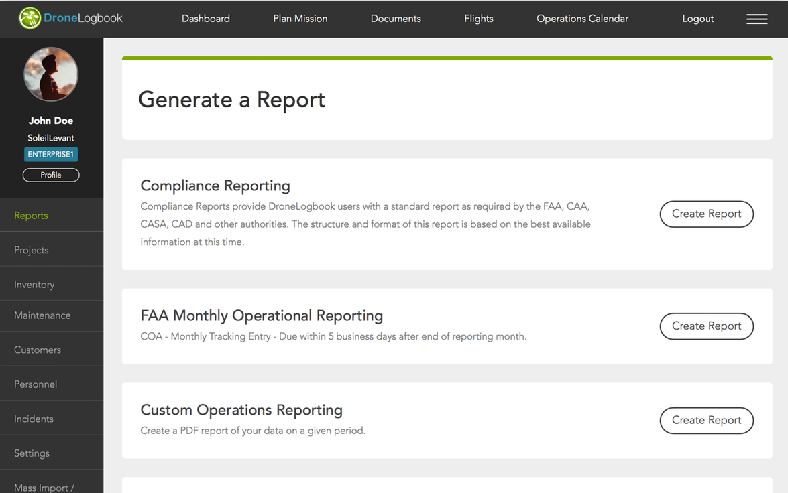
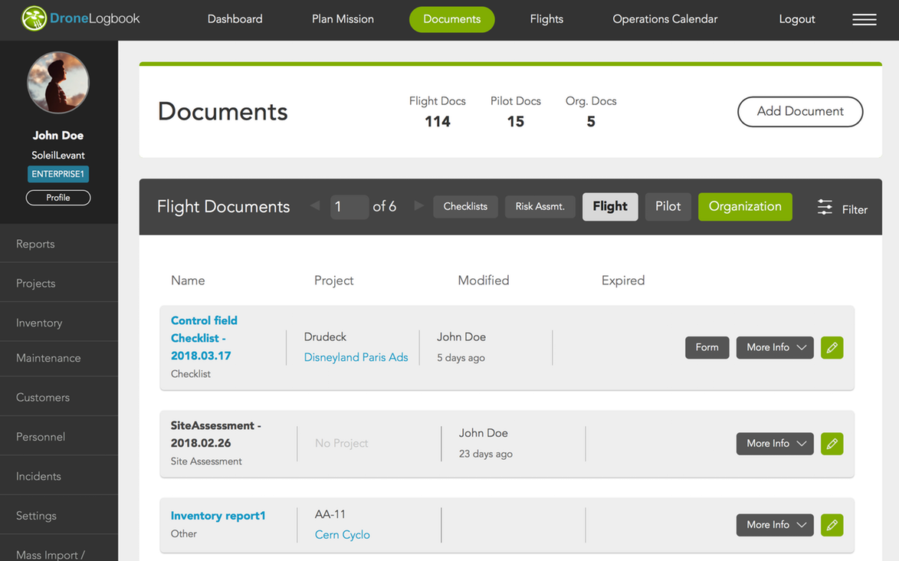
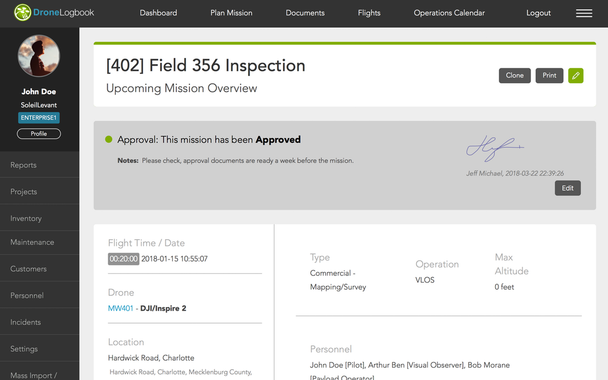
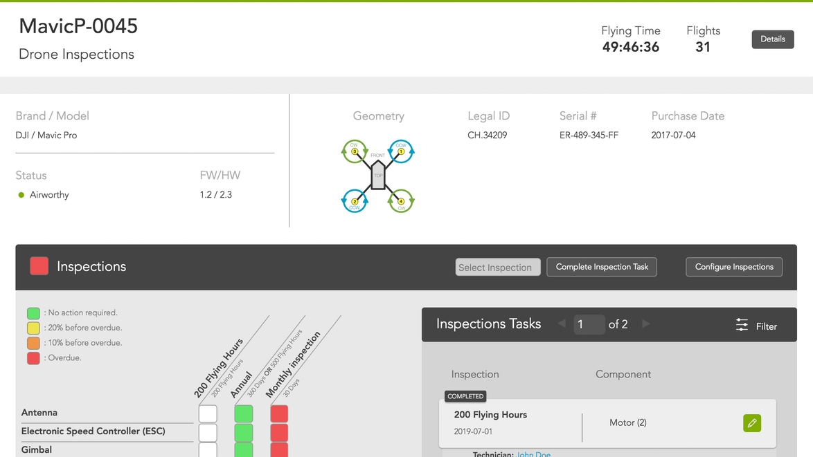
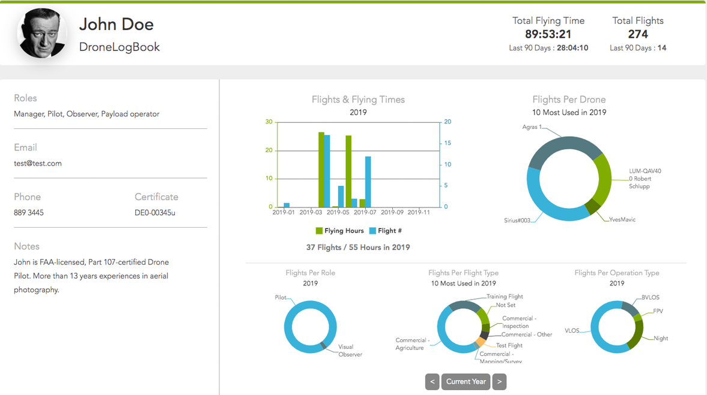

Protecting your data is our priority
We give you peace of mind with enterprise-level security to ensure your critical data is secure. Our organization and platform is SOC 2 compliant.
Our cloud platform utilizes state-of-the-art security measures to safeguard your data, ensuring it remains protected from unauthorized access or data breaches.

Compliance & Reporting Built for Agriculture
Agricultural UAV programs require accurate compliance records and traceable workflow documentation.
DroneLogbook Ag Edition supports:
FAA Part 137 aerial application compliance
Part 108 safety & operational compliance
State-level agricultural aviation reporting
Spray application documentation
Automated flight logs & telemetry import
Customizable forms for audits and inspections
Documentation for Every Flight & Every Field
Keep all agricultural UAV records organized and accessible:
Spray logs & application maps
Field boundaries & prescriptions
Pilot, applicator & crew records
Airworthiness and Inspection Documentation
Risk assessments, site surveys and pre-application checklists
Everything is stored securely in one centralized location.


Plan Missions & Manage Daily Field Operations
The operations calendar provides an at-a-glance overview of crop spray missions,
applicator schedules, weather windows and equipment readiness.
Assign crews, aircraft and payloads while maintaining full aviation compliance and
field documentation.
Drone Inspections & Maintenance for Agricultural Airframes
Agricultural UAVs operate under high load conditions,
requiring routine inspections and spray-system maintenance.
DroneLogbook Ag Edition makes it easy to:
Track component lifecycles
Manage pump cycles & tank usage
Log airframe inspections
Record battery cycles
Schedule routine or regulatory maintenance
This ensures safe, reliable spray operations during peak field seasons.


Personnel Dashboard for Agricultural Applicators
Manage remote pilots, applicators, ground crews and support teams with
a unified personnel dashboard. Log certifications, renewal dates, Part
137 documentation, Part 108 credentials and custom operator qualifications.